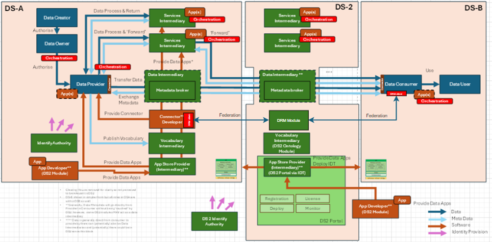
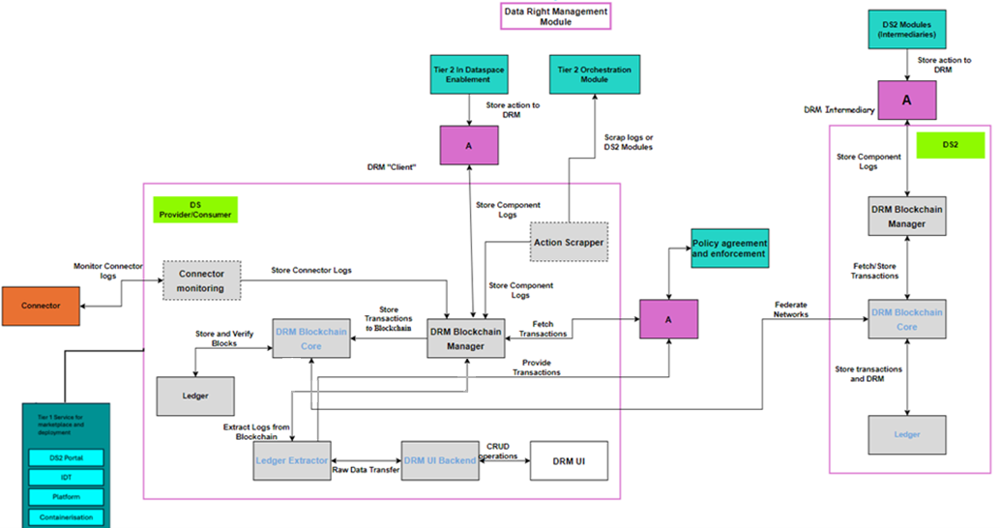
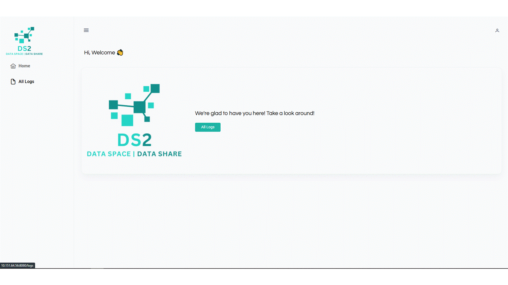
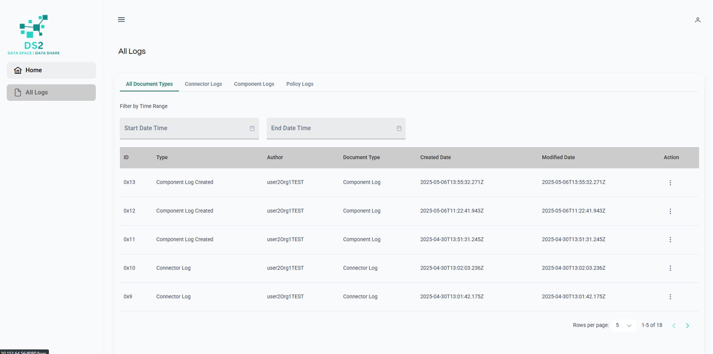
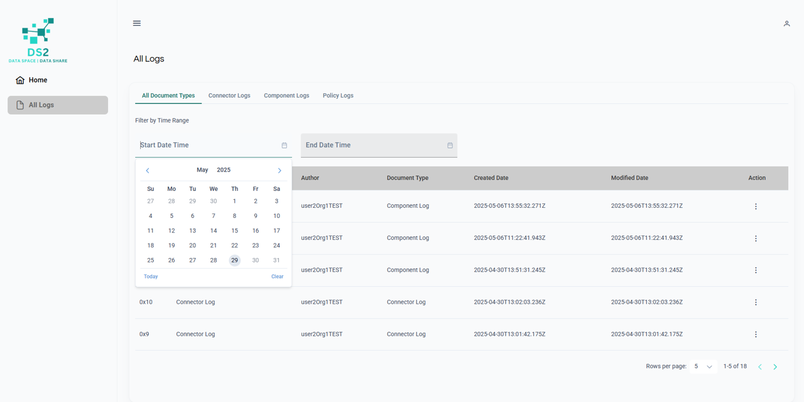
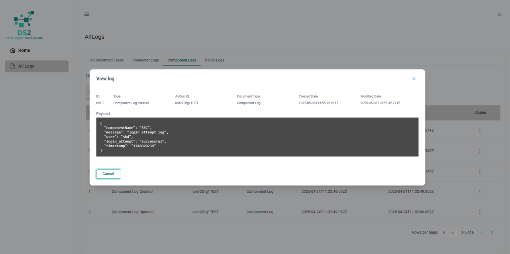

DRM
Use the table below as an example and replace with the links to the module's DS2 GitHub repository and GitHub project.
| Project Links |
|---|
| Software GitHub Repository https://github.com/ds2-eu/drm.git |
| Progress GitHub Project https://github.com/ds2-eu/DRM/issues |
General Description
Purpose: To enhance the management and security of digital asset transactions through a robust blockchain-based Data Rights Management (DRM) system. It is designed to perform critical functions, including the notarization, tracking, and validation of all data rights transactions both within individual Dataspaces and across multiple participating Dataspaces
Description: The Blockchain-based Data Rights Management module (based on the IDSA clearing house module specifications) will be a two-fold solution that will provide both inter (between Data Spaces) and intra (within Data Spaces) connectivity for data-sharing between Data providers and Data consumers of the participating Dataspaces.
Architecture
The figure below represents the module fit into the DS-DS environment. 
The figure below represents the actors, internal structure, primary sub-components, primary DS2 module interfaces, and primary other interfaces of the module. 
Component Definition
These modules have the following subcomponent and other functions: • DRM UI: This component is a dashboard that allows users to view logs and transactions occurring between or across dataspaces. Users can easily access detailed records of their interactions with other partners. This dashboard interacts with the DRM UI Backend subcomponent, which performs the necessary transformations of data extracted from the ledger extractor to be appropriately displayed on the dashboard and supports all necessary CRUD operations.
• DRM UI Backend: This subcomponent retrieves log information extracted from the ledger and performs additional transformations to make the data viewable on the dashboard. It interacts with the Ledger Extractor to access the requested data and communicates with the DRM UI to display the transformed data to users.
• Ledger Extractor: This subcomponent securely extracts data from the ledger, converts it into a readable format, forwards it to other services that require access to ledger information. It securely interacts with the DRM Blockchain Manager to retrieve the necessary logs that are stored to the Blockchain’s ledger, DRM UI Backend to provide information that need to be viewed in UI and with Policy Agreement and Enforcement through API to provide information that is needed for the app.
• Connector monitoring: This subcomponent is designed to retrieve logs from the connector and forward them to the blockchain for secure storage on the ledger. It interacts with the DRM Blockchain Manager to ensure that these logs are effectively recorded in the ledger. It is compatible with EDC connector and IDSA connector. This component is optional, allowing participants to use it solely for DRM to log transactions through supported APIs or restrict its use to DS2 tools if preferred.
• DRM Blockchain Core: This subcomponent is the core functionality of the blockchain incorporating essential components to initiate the blockchain network. It provides the functionality of storing immutable, verify information and encrypt information to the ledger. It interacts directly with the ledger to store information securely and works in conjunction with the Blockchain Manager to store additional logs provided by other DS2 modules.
• DRM Blockchain Manager: The subcomponent is responsible for fetching from the blockchain, transforming incoming data logs into the correct schema so they can be stored on the blockchain, and ensuring they are placed correctly within the blockchain's ledger. Furthermore, it interacts with the DS2 Policy Agreement and Enforcement Module via API to access and provide logs essential for its operations. Additionally, it interacts with other DS2 modules, that interact with data, via API to store logs about data process.
Screenshots

Commercial Information
| Organisation (s) | License Nature | License |
|---|---|---|
| ATC | Open Source | Apache 2.0 |
Top Features
-
End-to-End Data Accountability: Provides full traceability and transparency of data usage events, ensuring organizations can demonstrate compliance with data responsibility and sharing agreements.
-
Trusted Log Verification: Enables organizations to verify and audit logs in a tamper-evident way, fostering trust between data providers, consumers, and intermediaries.
-
Cross-Organizational Visibility: Offers a unified interface for viewing data-related events across systems and partners, improving governance in federated or multi-stakeholder environments.
-
Plug-and-Play Integration: Designed to integrate with existing DS2 components and Eclipse Dataspace Connectors with minimal effort, reducing the barrier to adoption.
-
Configurable Policy Monitoring: Collects and displays policy-related events (e.g., usage constraints, violations), supporting proactive governance and dynamic enforcement of data policies.
-
User-Centric Access to Ledger Insights: Through a visual interface, users can easily access and interpret ledger data without needing technical knowledge, democratizing access to compliance insights.
-
Modular and Scalable Architecture: Built with modular sub-components, allowing organizations to deploy the module in stages or scale it based on operational needs.
-
Designed for Interoperability in Data Spaces: Addresses real-world challenges of interoperability and trust in data spaces by aligning with emerging data sovereignty and governance requirements.
-
Enhances Digital Trust for Data Sharing: By proving that data usage is being tracked and governed, the DRM module helps build confidence and reduce friction in data sharing collaborations.
How To Install
Requirements
CPU: 8 vCPUs
RAM: 16 GB
Storage: 100 GB SSD (expandable depending on ledger size and log retention)
OS: Ubuntu 22.04 LTS or equivalent
Docker: Docker Engine ≥ 20.x, Docker Compose ≥ 2.x
Software
- Hyperledger Fabric
- Docker
- Docker Compose
- Node.js
- Express.js
- CouchDB
- Swagger / OpenAPI
- Postman (Optional, used during development)
- cURL
- Linux OS (e.g. Ubuntu)
Summary of installation steps
- Download and Setup Hyperledger Fabric
- Start the DRM Blockchain Core
- Run DRM Blockchain Manager
- Build and run DRM UI Backend as a Docker container
- Build and run DRM Ledger Extractor as a Docker container
- Build and run DRM connector monitoring as a Docker container
Detailed steps
Download Fabric samples, Docker images, and binaries
For a detailed view of the Hyperledger Fabric installation, make sure you read the official documentation: Hyperledger Fabric documentation
To get the install script:
curl -sSLO https://raw.githubusercontent.com/hyperledger/fabric/main/scripts/install-fabric.sh && chmod +x install-fabric.sh
To pull the Docker containers and clone the samples repo, run one of these commands for example
./install-fabric.sh docker samples binary
or
./install-fabric.sh d s b
If no arguments are supplied, then the arguments docker binary samples are assumed.
Make sure the Fabric binaries are added to your system PATH for CLI access.
Here are instructions for each subcomponent. Make sure you are in the direcory of each sub-component before running the following commands.
DRM Blockchain Core
To start the network you simple need to run the script:
DRM Blockchain Manager
DRM UI Backend
DRM connector monitoring
docker build -t drm-connector-monitoring:develop .
docker run -p 3001:3001 drm-connector-monitoring:develop
How To Use
You can import the Postman collection you can find here to interact with the DRM subcomponents. Keep in mind that, due to IT restrictions, not all endpoints are currently available. Future updates will offer the full DRM capabilities.
Step 1. Accessing DRM:
Click on the Dash button within the PORTAL. This will open the Digital Ledger Dashboard, displaying all logged information clearly.
Step 2. Tracking and Monitoring Logs:
Use the dashboard to track, monitor, and filter the following log types: * Component Logs * Connector Logs * Policy Logs 
Step 3. Filtering Logged Actions:
Filter the logs based on a specific timeframe. More filtering options will be available in the future. 
Step 4. Exploring Logged Actions:
To deep dive into details: Select a specific log entry. Review comprehensive payload details and information about each logged action. 
Step 5. Enrolling Users to the Blockchain Network:
Note: This feature is currently a work in progress. When available, follow prompts to enrol new users into the blockchain network seamlessly.
Step 6. Performing CRUD Operations:
Note: This functionality is under development. Once active, you will be able to: Create, Read, Update, and Delete logs efficiently.
Stay updated with module enhancements as new features are implemented.
Other Information
No other information at the moment for DRM.
OpenAPI Specification
• DRM UI: N/A
• DRM UI Backend: open-api/swagger-ui-backend.json
• Ledger Extractor: open-api/swagger-ledger-extractor.json
• Connector monitoring: To Be Done
• DRM Blockchain Core: N/A
• DRM Blockchain Manager: open-api/swagger-blockchain-manager.json
Additional Links
N/A